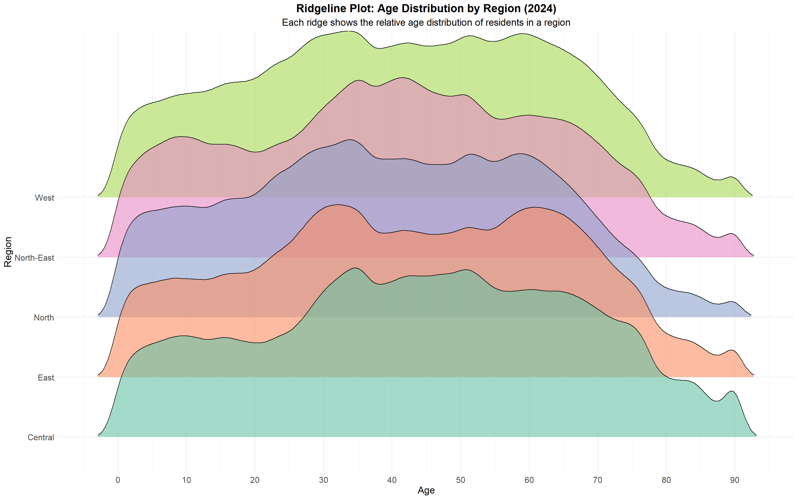

pacman::p_load(tidyverse, ggthemes, gghighlight, ggrepel, patchwork, knitr, scales, colorspaces, ggh4x, RColorBrewer, ggdist)Take Home Exercise 1
Singapore in 2024: A Visual Guide to our Population Landscape.
1.0 Introduction
Singapore’s population structure reveals a dynamic interplay between urban development, ageing, and youth distribution. Let’s explore the demographic breakdown of through ggplot2 charts.
2.0 Loading R Packages and Dataset
2.1 Libraries Required
The following R packages were used via pacman::p_load() to support data wrangling, visualization, and mapping for the population dataset.
| Package | Description | Official Link |
|---|---|---|
tidyverse |
A collection of R packages (including ggplot2, dplyr, readr, etc.) for data manipulation, exploration, and visualization. It forms the foundation of modern R workflows. |
tidyverse.org |
ggthemes |
Provides additional themes, color palettes, and formatting options for ggplot2 charts. |
CRAN – ggthemes |
patchwork |
Enables easy composition of multiple ggplot2 plots into complex layouts. |
patchwork.data-imaginist.com |
ggrepel |
Automatically adjusts text labels in ggplots to reduce overlap and improve clarity. | CRAN – ggrepel |
RColorBrewer |
Provides color palettes for visually appealing plots, useful for categorical coloring. | CRAN – RColorBrewer |
scales |
Provides formatting functions for axis labels, colors, etc., including comma separators and percentages. | CRAN – scales |
colorspaces |
Offers perceptually uniform color palettes and tools for color manipulation, useful for accessible and professional visualizations. | colorspace on CRAN |
gghighlight |
Simplifies the process of highlighting key data series or subsets in ggplot2, especially useful for comparative visuals. |
GitHub – gghighlight |
ggh4x |
Adds extensions to ggplot2, such as nested facets, flexible axis ticks, and advanced guides. Useful for advanced faceting or layout control. |
GitHub – ggh4x |
sf |
Tools for working with geospatial vector data in a tidy format. Required for spatial operations. | R-Spatial – sf |
2.1 Loading the dataset
The dataset used is “Singapore Residents by Planning Area / Subzone, Single Year of Age and Sex, June 2024”, it is shared by the Department of Statistics, Singapore (DOS).
We begin by loading the required libraries and reading the dataset using readr::read_csv() from the tidyverse collection:
df <- read_csv("data/respopagesex2024.csv")This dataset provides a snapshot of the resident population in Singapore as of June 2024, broken down by planning areas, subzones, age, and sex.
2.1.1 Column Descriptions
| Column | Description |
|---|---|
PA |
Planning Area – As defined by URA Master Plan 2019 |
SZ |
Subzone – Subdivision within a planning area |
Age |
Single Year of Age – From 0 to 100+ |
Sex |
Sex – “Males” or “Females” |
Pop |
Resident Count – Rounded to the nearest 10 |
Time |
Reference Period |
2.1.2 Notes from Source
- Residents who have been away from Singapore for more than 12 continuous months are excluded.
- All population counts are rounded to the nearest 10, which may result in totals that do not sum exactly.
- The reference period for this dataset is June 2024.
2.1.3 Understanding the data
Before we proceed with visualisation, a few inspection and validation of the dataset will be performed.
# A tibble: 6 × 6
PA SZ Age Sex Pop Time
<chr> <chr> <chr> <chr> <dbl> <dbl>
1 Ang Mo Kio Ang Mo Kio Town Centre 0 Males 10 2024
2 Ang Mo Kio Ang Mo Kio Town Centre 0 Females 10 2024
3 Ang Mo Kio Ang Mo Kio Town Centre 1 Males 10 2024
4 Ang Mo Kio Ang Mo Kio Town Centre 1 Females 10 2024
5 Ang Mo Kio Ang Mo Kio Town Centre 2 Males 10 2024
6 Ang Mo Kio Ang Mo Kio Town Centre 2 Females 10 2024Rows: 60,424
Columns: 6
$ PA <chr> "Ang Mo Kio", "Ang Mo Kio", "Ang Mo Kio", "Ang Mo Kio", "Ang Mo K…
$ SZ <chr> "Ang Mo Kio Town Centre", "Ang Mo Kio Town Centre", "Ang Mo Kio T…
$ Age <chr> "0", "0", "1", "1", "2", "2", "3", "3", "4", "4", "5", "5", "6", …
$ Sex <chr> "Males", "Females", "Males", "Females", "Males", "Females", "Male…
$ Pop <dbl> 10, 10, 10, 10, 10, 10, 10, 10, 30, 10, 20, 10, 20, 30, 30, 10, 3…
$ Time <dbl> 2024, 2024, 2024, 2024, 2024, 2024, 2024, 2024, 2024, 2024, 2024,…There are 60,424 rows noted with the 6 columns as stated in the source notes stated in earlier section 2.1.
However the column Age has been loaded as a character type instead of double (numeric) variable as it includes a categorical label for the age group 90+ as “90_and_Over”. This could be handled by converting this label into “90”together with an additional categorical label for this project.
Note: AgeGroup was eventually not used in the below visualisations and is only remained for future use cases.
df <- read_csv("data/respopagesex2024.csv",
col_types = cols(
Age = col_character()
)
) %>%
rename(
Planning_Area = PA,
Subzone = SZ,
Population = Pop
) %>%
mutate(
Age_Num = if_else(Age == "90_and_Over", 90L, as.integer(Age)),
AgeGroup = case_when(
Age_Num <= 14 ~ "Children (0–14)",
Age_Num <= 24 ~ "Youth (15–24)",
Age_Num <= 64 ~ "Adults (25–64)",
TRUE ~ "Elderly (65+)"
),
AgeGroup = factor(
AgeGroup,
levels = c("Children (0–14)", "Youth (15–24)", "Adults (25–64)", "Elderly (65+)")
),
Region = case_when(
Planning_Area %in% c(
"Ang Mo Kio", "Hougang", "Punggol", "Sengkang", "Serangoon",
"Seletar", "North-Eastern Islands"
) ~ "North-East",
Planning_Area %in% c(
"Bedok", "Pasir Ris", "Tampines", "Changi", "Changi Bay", "Paya Lebar"
) ~ "East",
Planning_Area %in% c(
"Bishan", "Bukit Merah", "Bukit Timah", "Downtown Core", "Geylang", "Kallang",
"Marine Parade", "Museum", "Newton", "Novena", "Orchard", "Outram", "Queenstown",
"River Valley", "Rochor", "Singapore River", "Southern Islands", "Straits View",
"Tanglin", "Toa Payoh"
) ~ "Central",
Planning_Area %in% c(
"Boon Lay", "Bukit Batok", "Bukit Panjang", "Choa Chu Kang", "Clementi", "Jurong East",
"Jurong West", "Pioneer", "Tengah", "Tuas", "Western Islands", "Western Water Catchment"
) ~ "West",
Planning_Area %in% c(
"Lim Chu Kang", "Mandai", "Sembawang", "Simpang", "Sungei Kadut", "Woodlands",
"Yishun", "Central Water Catchment"
) ~ "North",
)
)# A tibble: 6 × 9
Planning_Area Subzone Age Sex Population Time Age_Num AgeGroup Region
<chr> <chr> <chr> <chr> <dbl> <dbl> <int> <fct> <chr>
1 Ang Mo Kio Ang Mo Kio… 0 Males 10 2024 0 Childre… North…
2 Ang Mo Kio Ang Mo Kio… 0 Fema… 10 2024 0 Childre… North…
3 Ang Mo Kio Ang Mo Kio… 1 Males 10 2024 1 Childre… North…
4 Ang Mo Kio Ang Mo Kio… 1 Fema… 10 2024 1 Childre… North…
5 Ang Mo Kio Ang Mo Kio… 2 Males 10 2024 2 Childre… North…
6 Ang Mo Kio Ang Mo Kio… 2 Fema… 10 2024 2 Childre… North…Rows: 60,424
Columns: 9
$ Planning_Area <chr> "Ang Mo Kio", "Ang Mo Kio", "Ang Mo Kio", "Ang Mo Kio", …
$ Subzone <chr> "Ang Mo Kio Town Centre", "Ang Mo Kio Town Centre", "Ang…
$ Age <chr> "0", "0", "1", "1", "2", "2", "3", "3", "4", "4", "5", "…
$ Sex <chr> "Males", "Females", "Males", "Females", "Males", "Female…
$ Population <dbl> 10, 10, 10, 10, 10, 10, 10, 10, 30, 10, 20, 10, 20, 30, …
$ Time <dbl> 2024, 2024, 2024, 2024, 2024, 2024, 2024, 2024, 2024, 20…
$ Age_Num <int> 0, 0, 1, 1, 2, 2, 3, 3, 4, 4, 5, 5, 6, 6, 7, 7, 8, 8, 9,…
$ AgeGroup <fct> Children (0–14), Children (0–14), Children (0–14), Child…
$ Region <chr> "North-East", "North-East", "North-East", "North-East", …3.0 Visualisations
3.1 Age Distribution - Age and Gender Distribution
To begin our exploration of Singapore’s demographic structure, we start with a population pyramid, a classic visualization that provides a high-level summary of age and gender distribution. This visualization helps establish an overview of the national population balance across life stages and reveals immediate trends—such as ageing, fertility shifts, and gender imbalances at older ages. It serves as a foundational snapshot to ground our subsequent spatial exploration.
# === STEP 1: Find the Maximum Age ===
max_age <- max(df$Age_Num, na.rm = TRUE)
# === STEP 2: Prepare the Data ===
plot_df <- df %>%
mutate(
AgeGroup = cut(
Age_Num,
breaks = if (max_age > 90) {
c(seq(0, 85, by = 5), 90, max_age + 1)
} else {
c(seq(0, 85, by = 5), max_age + 1)
},
right = FALSE,
labels = if (max_age > 90) {
c(paste0(seq(0, 80, by = 5), "-", seq(4, 84, by = 5)), "90+")
} else {
c(paste0(seq(0, 80, by = 5), "-", seq(4, 84, by = 5)), "90+")
}
)
) %>%
group_by(AgeGroup, Sex) %>%
summarise(Population = sum(Population), .groups = "drop") %>%
mutate(
Population = ifelse(Sex == "Males", -Population, Population),
PopulationAbs = abs(Population)
)
# === STEP 3: Plot ===
ggplot(plot_df, aes(x = AgeGroup, y = Population, fill = Sex)) +
geom_bar(stat = "identity", width = 0.90, color = "black") +
geom_text(
aes(label = format(PopulationAbs, big.mark = ",")),
size = 4.5,
color = "black",
hjust = ifelse(plot_df$Sex == "Males", -0.05, 1.05),
show.legend = FALSE
) +
coord_flip() +
labs(
title = "Singapore's Population Pyramid (2024) by 5-Year Age Groups",
x = "Age Group",
y = "Population Size"
) +
scale_y_continuous(
labels = function(x) format(abs(x), big.mark = ",", scientific = FALSE),
limits = c(-200000, 200000),
breaks = seq(-200000, 200000, by = 50000),
minor_breaks = seq(-200000, 200000, by = 25000)
) +
scale_fill_manual(
values = c("Males" = "#87CEFA", "Females" = "#FFB6C1"),
breaks = c("Males", "Females")
) +
theme_minimal() +
theme(
plot.title = element_text(hjust = 0.5),
legend.position = "bottom",
axis.text.y = element_text(hjust = 0),
panel.grid.minor.x = element_line(color = "grey85", size = 0.3)
)3.2 Age Distribution by Region
While the population pyramid offers a valuable national overview, it does not reveal where these demographic segments are concentrated within Singapore. To explore this spatial dimension, we now turn to age distribution density plots by region. These plots enable us to compare the relative age profiles across Singapore’s five regions, highlighting differences in median age, spread, and peak density. This step is critical in understanding regional population characteristics that can inform location-specific planning and policy decisions.
# === STEP 1: Prepare Overall Population-weighted Data ===
overall_df <- df %>%
filter(!is.na(Age_Num)) %>%
group_by(Region, Age_Num) %>%
summarise(Population = sum(Population), .groups = "drop") %>%
uncount(weights = Population)
# === STEP 2: Compute Peak Age by Region ===
overall_peaks <- overall_df %>%
group_by(Region) %>%
summarise(
d = list(density(Age_Num)),
.groups = "drop"
) %>%
rowwise() %>%
mutate(
peak_x = d$x[which.max(d$y)],
label = paste0(Region, " - Peak Age: ", round(peak_x))
) %>%
ungroup()
# === STEP 3: Combine Labels for Annotation ===
overall_annotation <- paste(overall_peaks$label, collapse = "\n")
# === STEP 4: Create Overall Density Plot ===
overall_plot <- ggplot(overall_df, aes(x = Age_Num, fill = Region)) +
geom_density(alpha = 0.6, color = "black", linewidth = 0.7) +
annotate("text", x = 5, y = Inf, vjust = 1.2,
label = overall_annotation, hjust = 0, size = 3.5, fontface = "italic") +
scale_x_continuous(breaks = seq(0, 90, 10)) +
scale_fill_brewer(palette = "Set2") +
labs(
title = "Age Distribution (2024): Overall",
subtitle = "Density by Region with Y-axis scaled per chart",
x = "Age", y = "Relative Density", fill = "Region"
) +
theme_minimal() +
theme(
plot.title = element_text(face = "bold", hjust = 0.5, size = 16),
plot.subtitle = element_text(hjust = 0.5, size = 16),
axis.title.x = element_text(size = 16),
axis.title.y = element_text(size = 16),
axis.text.x = element_text(size = 14),
axis.text.y = element_text(size = 14),
panel.border = element_rect(color = "grey50", fill = NA),
legend.position = "right"
)
# === STEP 5: Render ===
overall_plot
:::
3.3 Violin and Boxplot - Age Distribution by Planning Area per Region
Having observed regional patterns, we now dive deeper into planning areas within each region to uncover more localized demographic variation. Using a combination of violin and boxplots, this section visualizes the distribution and central tendency of age at the town level. This finer level of granularity helps uncover subtle but important intra-regional differences—such as the presence of younger families in emerging towns, or older populations in established estates—which are essential for targeted interventions and infrastructure planning.
# === STEP 1: Prepare Population-weighted Data ===
violin_df <- df %>%
filter(!is.na(Region), !is.na(Age_Num)) %>%
uncount(weights = Population) %>%
mutate(Planning_Area = factor(Planning_Area))
# === STEP 2: Define Region Base Colors ===
region_base_colors <- c(
"Central" = "#66C2A5", # teal
"East" = "#FC8D62", # orange
"North" = "#8DA0CB", # blue
"North-East" = "#E78AC3", # pink
"West" = "#A6D854" # green
)
# === STEP 3: Compute Median Age Helper ===
get_median_labels <- function(data, group_col) {
data %>%
group_by(across(all_of(group_col))) %>%
summarise(median_age = median(Age_Num), .groups = "drop") %>%
mutate(label = round(median_age, 1))
}
# === STEP 4: Region Function – Violin + Boxplot by Planning Area ===
make_violin_region <- function(region_name, base_color) {
region_df <- violin_df %>% filter(Region == region_name)
# Compute medians and sort Planning Areas in descending order
pa_medians <- get_median_labels(region_df, "Planning_Area") %>%
arrange(desc(median_age))
# Reorder factors by descending median age
region_df$Planning_Area <- factor(region_df$Planning_Area,
levels = pa_medians$Planning_Area)
pa_medians$Planning_Area <- factor(pa_medians$Planning_Area,
levels = pa_medians$Planning_Area)
# Reverse gradient (darkest color left)
n_colors <- length(levels(region_df$Planning_Area))
color_shades <- colorRampPalette(c(base_color, "white"))(n_colors)
names(color_shades) <- levels(region_df$Planning_Area)
ggplot(region_df, aes(x = Planning_Area, y = Age_Num, fill = Planning_Area)) +
geom_violin(trim = FALSE, scale = "area", color = "black", alpha = 0.5) +
geom_boxplot(width = 0.15, outlier.shape = NA, alpha = 0.8, color = "black") +
ggrepel::geom_text_repel(
data = pa_medians,
aes(x = Planning_Area, y = median_age, label = label),
inherit.aes = FALSE,
size = 3.5, fontface = "italic",
max.overlaps = Inf,
min.segment.length = 0,
nudge_y = 0.5
) +
scale_fill_manual(values = color_shades) +
labs(
title = paste("Age Distribution by Planning Area: ", region_name),
x = NULL,
y ="Age"
) +
theme_minimal() +
theme(
plot.title = element_text(face = "bold", hjust = 0.5, size = 16),
axis.title.y = element_text(size = 16),
axis.text.x = element_text(angle = 90, hjust = 0.5, vjust = 0.5, size = 14),
axis.text.y = element_text(size = 14),
panel.border = element_rect(color = "grey50", fill = NA),
legend.position = "none"
)
}
# === STEP 5: Region Violin Plots ===
central_violin <- make_violin_region("Central", region_base_colors["Central"])
east_violin <- make_violin_region("East", region_base_colors["East"])
north_violin <- make_violin_region("North", region_base_colors["North"])
north_east_violin <- make_violin_region("North-East", region_base_colors["North-East"])
west_violin <- make_violin_region("West", region_base_colors["West"])
# === STEP 6: Assemble Vertical Layout ===
violin_boxplot_grid <-
central_violin /
east_violin /
north_violin /
north_east_violin /
west_violin +
plot_layout(ncol = 1) +
plot_annotation(
title = "Violin + Boxplot of Age Distribution (2024)",
subtitle = "Regional breakdown by Planning Areas sorted by Median Age (Descending)\nColor fades left to right by age rank",
theme = theme(
plot.title = element_text(size = 16, face = "bold", hjust = 0.5),
plot.subtitle = element_text(size = 11, hjust = 0.5)
)
)
# === STEP 7: Render ===
violin_boxplot_grid{kind=link}
4.0 Conclusion
Singapore’s 2024 demographic landscape reveals critical shifts in its age structure. The population pyramid offers a clear macro-level view, showing a narrowing base of youth and an expanding older population—a hallmark of an aging society. This broad observation sets the stage for deeper investigation.
To explore regional variations, we transitioned to density plots that highlight how age distribution differs across Singapore’s five regions. These plots uncovered distinct demographic peaks—for instance, younger population clusters in the North-East, and more mature age groups in Central and East regions.
Building on this, we employed violin and boxplots to zoom into each region’s planning areas, allowing for a more granular understanding of intra-regional differences. This visual dissection surfaced insights like the relative youth of areas such as Sengkang and Punggol, contrasted with the aging profiles of mature estates like Queenstown and Bukit Merah.
Together, these visualisations form a layered narrative—from national structure, to regional patterns, to local planning area details. They provide an insightful foundation for urban planners, policymakers, and social services to adapt strategies in line with Singapore’s evolving demographic realities.
📌 The above code chunk and narratives were assisted by ChatGPT with numerous hours of prompting and checking the output.
5.0 Self Improvements to Take Home Ex01
After Week 4, the introduction of ggridges extension on examination scores had led me to trying it out for my second visual presented in section 3.2.
pacman::p_load(tidyverse, ggridges)# === STEP 1: Prepare Population-weighted Data ===
ridge_df <- df %>%
filter(!is.na(Region), !is.na(Age_Num)) %>%
group_by(Region, Age_Num) %>%
summarise(Population = sum(Population), .groups = "drop") %>%
uncount(weights = Population)
# === STEP 2: Create Ridgeline Plot ===
ggplot(ridge_df, aes(x = Age_Num, y = Region, fill = Region)) +
ggridges::geom_density_ridges(scale = 3, alpha = 0.6, color = "black", rel_min_height = 0.01) +
scale_x_continuous(breaks = seq(0, 90, 10)) +
scale_fill_brewer(palette = "Set2") +
labs(
title = "Ridgeline Plot: Age Distribution by Region (2024)",
subtitle = "Each ridge shows the relative age distribution of residents in a region",
x = "Age", y = "Region", fill = "Region"
) +
theme_minimal() +
theme(
plot.title = element_text(face = "bold", hjust = 0.5, size = 16),
plot.subtitle = element_text(hjust = 0.5, size = 14),
axis.title.x = element_text(size = 14),
axis.title.y = element_text(size = 14),
axis.text = element_text(size = 12),
legend.position = "none"
)
Note
This has significantly improved the separation of regions, allowing the reader to differentiate peaks of distribution per region.